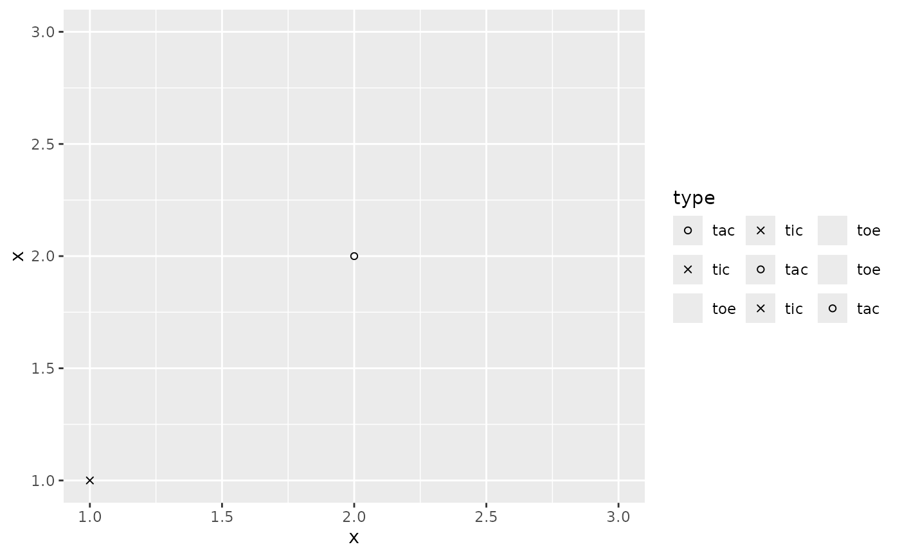
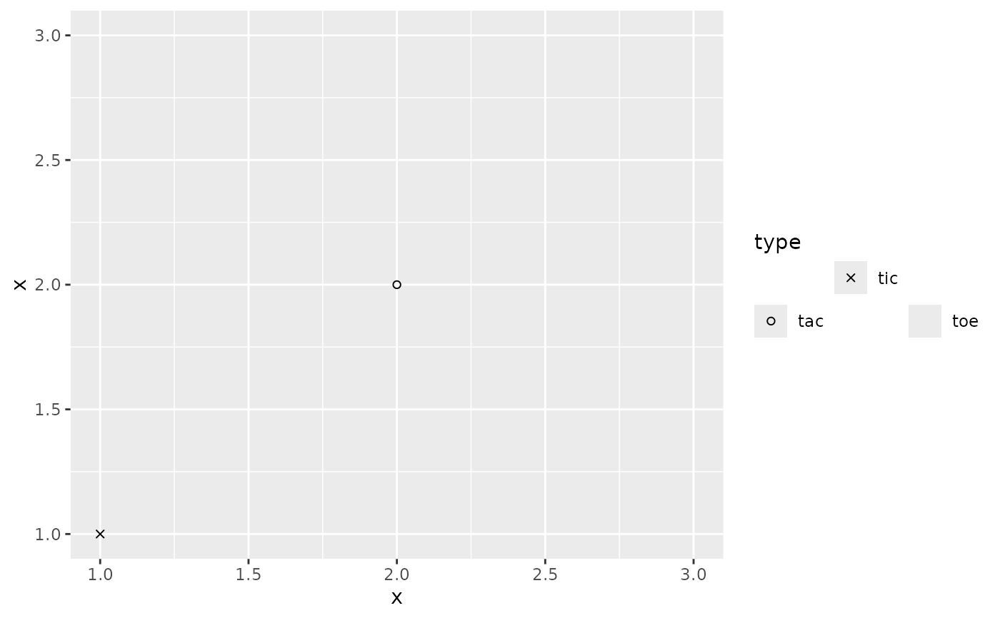

This legend closely mirrors ggplot2::guide_legend(), but has two
adjustments. First, guide_legend_base() supports a design argument
for a more flexible layout. Secondly, the legend.spacing.y theme element
is observed verbatim instead of overruled.
Arguments
- key
A standard key specification. Defaults to
key_auto(). See more information in the linked topic.- title
A
<character[1]>or<expression[1]>indicating the title of the guide. IfNULL, the title is not shown. The default,waiver(), takes the name of the scale object or the name specified inlabs()as the title.- theme
A
<theme>object to style the guide individually or differently from the plot's theme settings. Thethemeargument in the guide overrides and is combined with the plot's theme.- design
Specification of the legend layout. One of the following:
NULL(default) to use the layout algorithm ofguide_legend().A
<character[1]>string representing a cell layout wherein#defines an empty cell. See examples.A
<matrix[n, m]>representing a cell layout whereinNAdefines an empty cell. See examples. Non-string atomic vectors will be treated withas.matrix().
- nrow, ncol
A positive
<integer[1]>setting the desired dimensions of the legend layout. WhenNULL(default), the dimensions will be derived from thedesignargument or fit to match the number of keys.- reverse
A
<logical[1]>whether the order of keys should be inverted.- override.aes
A named
<list>specifying aesthetic parameters of the key glyphs. See details and examples inguide_legend().- position
A
<character[1]>giving the location of the guide. Can be one of"top","bottom","left"or"right".- direction
A
<character[1]>indicating the direction of the guide. Can be on of"horizontal"or"vertical".- order
A positive
<integer[1]>that specifies the order of this guide among multiple guides. This controls in which order guides are merged if there are multiple guides for the same position. If0(default), the order is determined by a hashing indicative settings of a guide.
See also
Other standalone guides:
guide_axis_base(),
guide_axis_dendro(),
guide_axis_nested(),
guide_circles(),
guide_colbar(),
guide_colring(),
guide_colsteps(),
guide_legend_cross(),
guide_legend_group()
Other legend guides:
guide_legend_cross(),
guide_legend_group()
Examples
# A dummy plot
p <- ggplot(data.frame(x = 1:3, type = c("tic", "tac", "toe"))) +
aes(x, x, shape = type) +
geom_point(na.rm = TRUE) +
scale_shape_manual(values = c(1, 4, NA))
# A design string, each character giving a cell value.
# Newlines separate rows, white space is ignored.
design <- "
123
213
321
"
# Alternatively, the same can be specified using a matrix directly
# design <- matrix(c(1, 2, 3, 2, 1, 3, 3, 2, 1), 3, 3, byrow = TRUE)
p + guides(shape = guide_legend_base(design = design))

# Empty cells can be created using `#`
design <- "
#2#
1#3
"
# Alternatively:
# design <- matrix(c(NA, 1, 2, NA, NA, 3), nrow = 2)
p + guides(shape = guide_legend_base(design = design))
